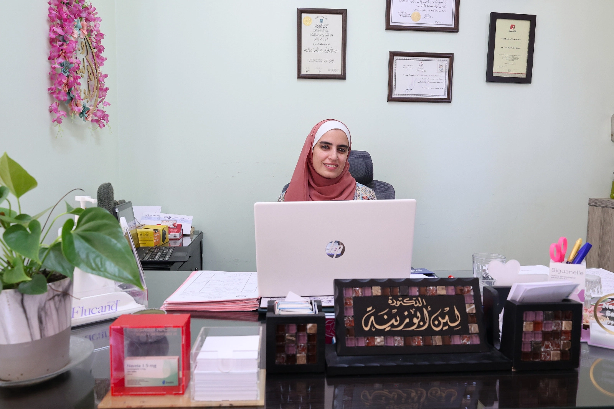
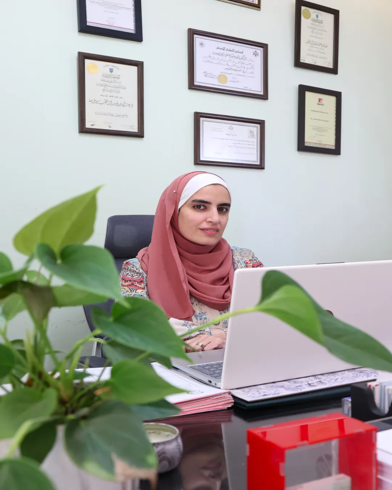

الرئيسية
الدكتورة لين أبو زينة
استشارية النسائية والتوليد
ضعي طفلكي بأيدي أمينة
أنهت الدكتورة لين أبو زينة درجة البكالوريوس في الطب والجراحة من الجامعة الأردنية بتميز. ثم التحقت ببرنامج الإختصاص العالي؛ أيضاََ في الجامعة الأردنية و مستشفى الجامعة الأردنية، حيث أنهت الإختصاص بتفوق عالي. و حصلت على البورد الأردني خلال مرحلة الإختصاص.

أوقات دوام عيادة النسائية والتوليد:
أيام الأحد والإثنين والأربعاء والخميس من 10:00 صباحا حتى 4:00 بعد الظهر.
السبت و الثلاثاء من 4:00 بعد الظهر حتى 7:00 مساءً.
الموقع
عمّان - شارع المدينة المنورة
خلف مستشفى ابن الهيثم - مجمع القصر الطبي
للحجز و الإستفسار
00962799061494